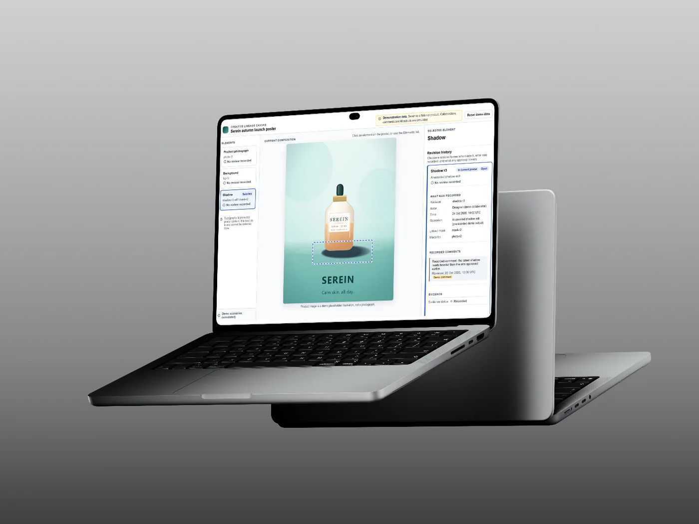
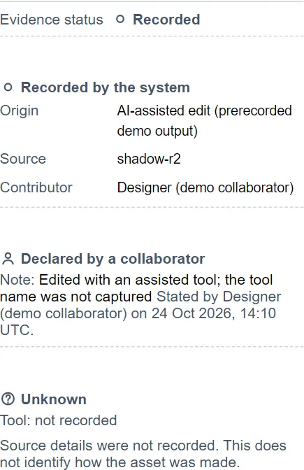
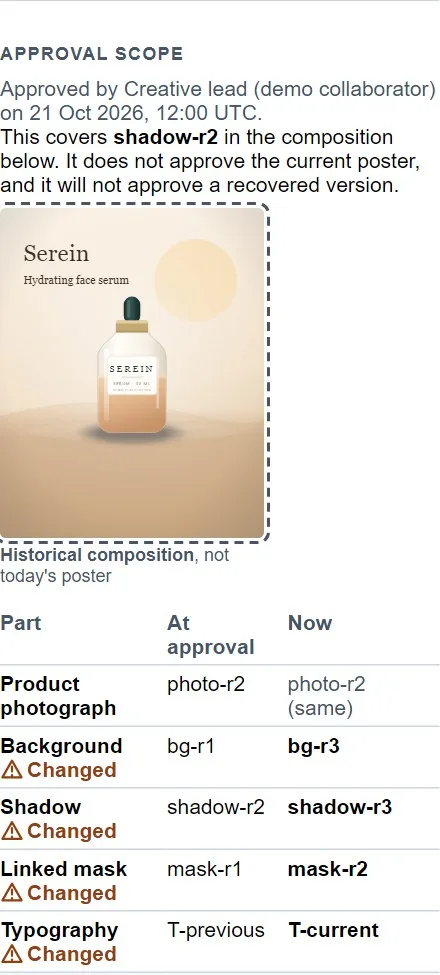
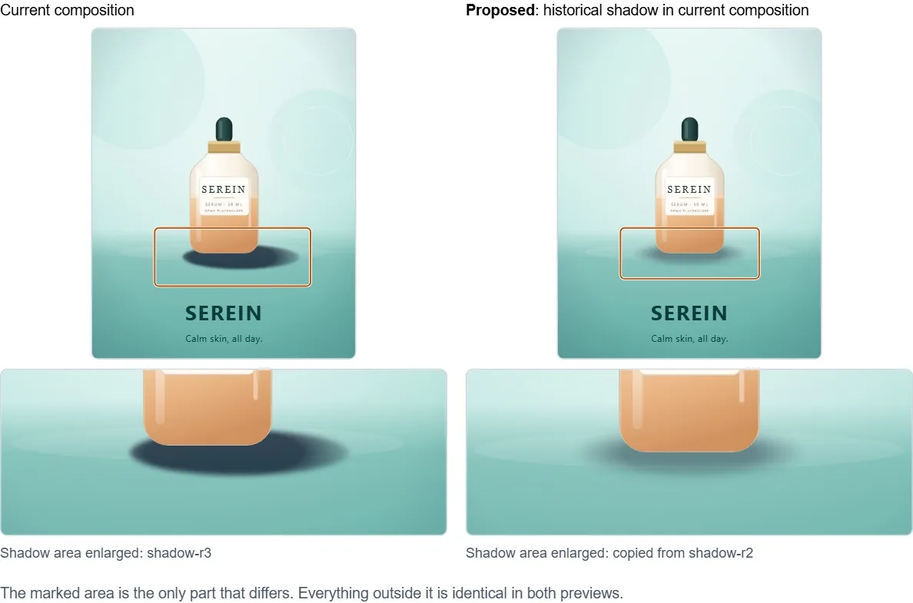
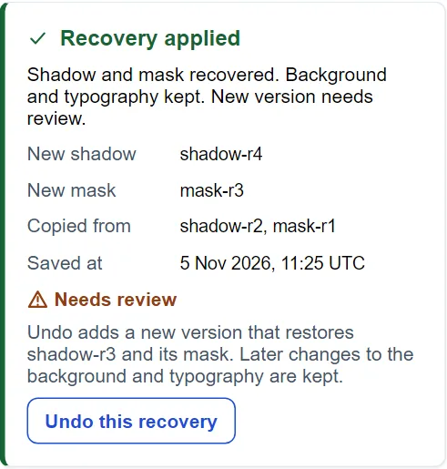

Lineage
Creative Lineage Canvas - Recover the shadow. Keep the progress.
Creative Lineage Canvas helps a designer bring back an earlier approved element while keeping the rest of the poster as it is today.
View tutorial/prototype (opens in a new tab)An independent desktop UX concept for small creative teams working with a mix of manual edits and AI-assisted artwork. The central question: can a recovery show its consequences clearly enough for someone to trust the next click?
- Role and format
- UX design and prototyping; independent concept with AI-assisted research and implementation.
- Time and scope
- 45 days and three tracked elements.
- Result
- A working recovery flow that preserves unrelated work and marks the recovered result.

One small shadow with several consequential decisions.
A designer working on a project wants an older shadow. However, the current photograph, background and wording need to stay.
In the Serein demo scenario, a manually refined shadow was approved in an earlier poster. A later AI-assisted edit made it heavier. Meanwhile, other parts of the poster changed. Restoring the whole earlier poster would also replace work the designer wants to keep.
PS: Serein is fictional. Its collaborators, comments, approvals and AI outputs are purely demonstration records. The scenario exercises a design hypothesis; it is not a client incident or a participant story.
The problem I chose to solve
The aim of this product is to help someone identify the right recorded element, understand what its approval covered, and predict what recovering it will change.
Selective restoration already exists. The open UX question is whether bringing this decision context together makes recovery clearer.
An example of what a successful recovery must preserve
- The chosen shadow must return with the mask it needs.
- The current photograph, background and typography must remain intact.
- Earlier versions and approvals must stay in the record.
- The new result must be clearly marked for review.
A revision is a saved version of one element. A mask controls where artwork is visible. Here the shadow relies on a particular mask, so recovering one without the other could change its appearance.
Checking whether this problem already has a solution.
I used a desk review to narrow the opportunity.
The project research combined the following:
- Original HCI papers
- Official product documentation,
- Provenance guidance and public workflow reports.
I asked how people reuse earlier work, what existing tools can restore, and where a recovery can become difficult to predict.
The evidence makes this a credible design investigation. It does not tell me how often small agencies face the scenario, how costly it is, or whether they would adopt a separate recovery workspace.
Selective recovery did not start here.
The opportunities
I brought three questions into one interaction:
- Is this the revision I want?
- What else must come with it? What will remain as it is?
Designing for the job
Two proto-personas describe the work and the approval relationship.
Primary proto-persona - The campaign designer
Secondary proto-persona - The creative lead or reviewer
The shared job to be done
When I need an earlier approved element, help me identify it and see the effects of recovering it, so I can keep later work and make an informed choice.
Turning uncertainty into design questions.
How might we help a designer recover a previously approved element while understanding its dependencies, evidence gaps and effects on the current composition?
Three principles that guided the trade-offs
- 1Make scope visible. The designer should be able to say what changes and what stays.
- 2Keep history accountable. New work gets a new revision; earlier approvals and records remain attached to their sources.
- 3Prefer an explicit stop to a silent substitution. If required artwork is missing or incompatible, explain why recovery cannot proceed.
Explaining and verifying four ways back.
The cost of the chosen approach
The prototype cannot automatically recover separable elements from flattened or unrecorded artwork. Its fallback is to choose another recorded revision or redo the work manually in the editor. It explicitly says that this prototype has no branch editor.
Scope was also a design decision
I kept one end-to-end poster scenario:
- Three selectable elements
- Revision inspection, comparison
- Recovery preview, apply, undo and reproducible failure states.
- The mask remains a dependency rather than a fourth primary element and typography is the protected content.
PS:Live AI generation, accounts, multiplayer editing, cross-app capture and broad rights management were deferred. The prototype demonstrates the recovery decision, not a full creative suite.
Choosing the piece. Reading its story.
“Not recorded” is a useful answer.
Selecting Shadow exposes its revisions, actor, time, operation, recorded comments and linked mask.
The current revision records an AI-assisted edit, while the tool name was not captured.

Why three evidence groups?
- Recorded by the system identifies captured metadata.
- Declared by a collaborator identifies a person's statement.
- Unknown identifies what the record cannot answer.
This avoids turning a collaborator's declaration into a verified fact, or an absent tool name into a guess about how the artwork was made.
Why the mask is not another main selection
The user is trying to recover a shadow. The mask matters because that task depends on it. Showing the mask as required supporting material preserves the relationship without asking the designer to manage a separate top-level recovery.
Approving has an address. It stays there.
The older shadow was reviewed alongside an earlier background and wording. Reusing the same artwork in a new composition changes that context.

Trying it on. Then reading the consequences.
The comparison places the earlier shadow inside today's poster, using explicit controls rather than hover. A framed canvas and “Preview only, nothing is saved” message identify the temporary state. The saved composition remains unchanged.

Why enlarge the shadow?
Two complete posters fit in the dialog, but the small difference was difficult to inspect. The enlarged detail makes the actual decision visible without asking the user to infer it from metadata.
Recovering gets a receipt. Undoing leaves a record.
Applying recovery copies the chosen shadow and its required mask into new revisions. It preserves the current photograph, background and typography; the original approval stays put.
The receipt lists the new revisions, their sources and the save time. Success appears only after the save succeeds, and the result is marked Needs review.

Why undo adds a version
A whole-scene rollback could remove unrelated later changes. Here undo adds a compensating revision: another saved version that restores the previous shadow and mask. The history grows rather than losing the recovery event.
The cost is an unfamiliar meaning of undo and a longer history. If the shadow, its mask or the required photograph position changed incompatibly, undo is blocked instead of overwriting that newer work.
The “no” states are part of the design.
A deliberately conservative preview rule
Any change to the recorded scene invalidates an open preview, even when the change looks unrelated to the shadow. A more selective rule could reduce interruptions, but would need a second, reliable account of which changes affect the plan.
The screen challenged the specification.
These iterations came from implementation and visual review. They were not findings from a user test.
What I left open
- The revision card may be too long.
- The approval wording may be too subtle.
- Undo may not match expectations.
I recorded these concerns rather than writing a successful user outcome around them. The next study should establish where people hesitate and what they believe happened.
Recovery should not require a mouse.
Issues identified, still to address
- The canvas hint leads with clicking.
- The demo controls interrupt the keyboard route from element selection to history.
- Reset is the first tab stop, with no skip link.
Next: a keyboard-only walkthrough by a person, followed by a screen-reader session with actual announcements recorded. The current evidence does not establish WCAG conformance.
Test the interpretation
The prepared plan aims for five participants, with three as a useful minimum:
- Campaign designers in small studios
- Near-equivalent in-house designers or freelancers, and
- Ideally one creative lead.
Measure understanding before speed
- Record unaided completion, hints, misattribution
- Approval-scope comprehension
- Unexpected-change beliefs and hesitation.
What I would carry forward
The useful part of this project is connecting a rule to a consequence a person can inspect. The shadow is small; the decision around it is not. My next step is to watch someone make that decision, then change the design where their understanding and the system's behaviour part ways.